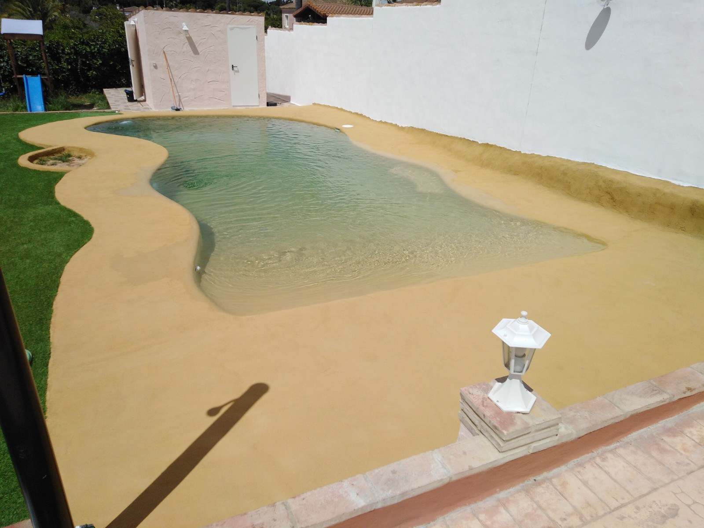
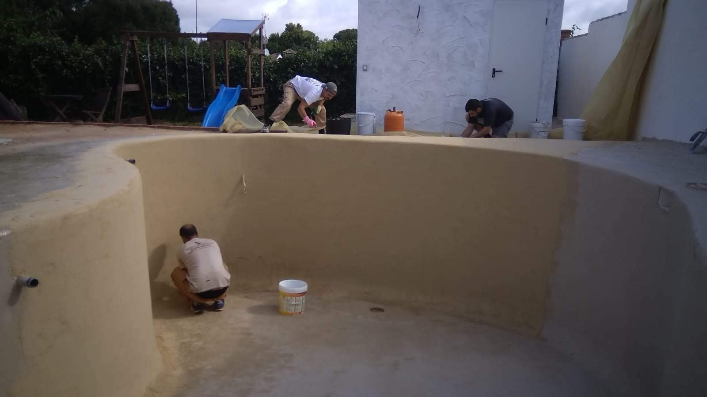
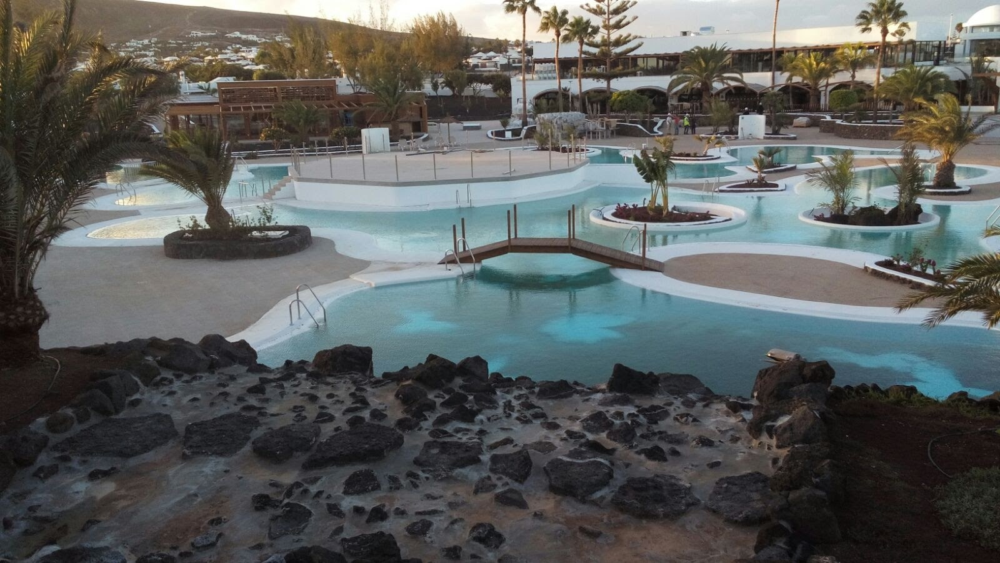

Tono y textura
Revisamos el aspecto que buscas y las muestras disponibles del sistema elegido. Una fotografía orienta, pero no sustituye una muestra: la luz y el agua cambian la percepción del acabado.
OCM POOL · ACABADOS PARA PISCINAS
Acabados de aspecto natural para el vaso, las curvas y las entradas de tu piscina. Desde Arcos de la Frontera estudiamos tu construcción o reforma en la provincia de Cádiz.
Consultar mi proyecto ↗
ASPECTO NATURAL
La elección de un revestimiento no se limita al color. Revisamos el estado del vaso, la forma de la piscina y las zonas que quieres renovar antes de proponer un sistema.
Cuarzo, mármol y arena de sílice son materiales que pueden formar parte de distintas soluciones de acabado. Su nombre, por sí solo, no define cómo se aplica el producto ni dónde puede utilizarse: concretamos la composición y el uso previsto de cada sistema.
Para el interior del vaso valoramos productos indicados para ese uso. La entrada al agua, los peldaños y el exterior se estudian como superficies con necesidades diferentes.
DE LA IDEA AL MATERIAL
Revisamos el aspecto que buscas y las muestras disponibles del sistema elegido. Una fotografía orienta, pero no sustituye una muestra: la luz y el agua cambian la percepción del acabado.
Estudiamos curvas, escaleras, bancos y uniones con la coronación. Definimos qué zonas se revestirán y cómo se resolverán los encuentros dentro del alcance de la obra.
En una reforma, revisamos el acabado existente y los puntos deteriorados. La preparación del soporte y los trabajos previos se incluyen en la valoración del proyecto.
FOTOGRAFÍAS DE TRABAJOS


OBRA NUEVA O REFORMA
Podemos estudiar el revestimiento junto con una piscina nueva o como parte de una reforma. Si también quieres modificar la entrada, añadir una zona de descanso o renovar el borde, lo valoramos en el mismo proyecto.
El presupuesto se prepara con la localidad, fotografías, medidas aproximadas y una descripción del estado actual. La superficie a tratar y las reparaciones necesarias condicionan los trabajos.
Ver piscinas de arena y tipo playa ↗ANTES DE DECIDIR
No son nombres suficientes para identificar una solución concreta. Una piscina tipo playa describe también su forma y acceso; el revestimiento se selecciona aparte según el sistema y el uso previsto.
Hay que revisar el soporte y las condiciones del sistema propuesto. Con fotografías y, cuando sea necesario, una visita, valoramos si hay que retirar el acabado existente y qué preparación hace falta.
Estudiamos las opciones del sistema seleccionado y las zonas de uso. Antes de decidir conviene revisar muestras y concretar el acabado, especialmente en accesos y zonas de paso.
Los cuidados dependen del sistema instalado. Al concretar el producto se deben seguir sus indicaciones de limpieza, tratamiento del agua y puesta en servicio.
EMPECEMOS POR TU IDEA
Envíanos la localidad, fotografías y medidas aproximadas. Te ayudamos a definir qué trabajos conviene estudiar para tu piscina.
Pedir presupuesto por WhatsApp ↗Volver a acabados ↗